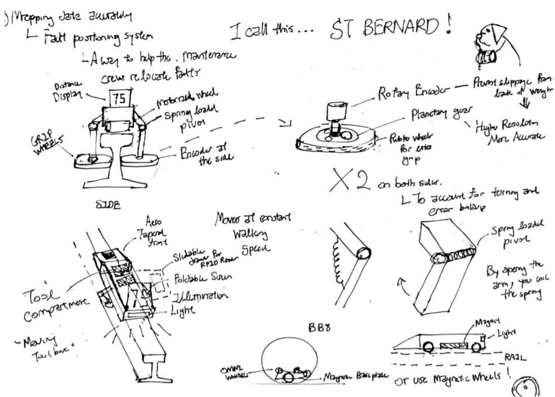

A railway data measuring and mapping system
For my final year capstone project, I worked team RAILORDS (Eric Teo, Kevin Tan, Lam Teng Foong, Nicholas Ng and Toh Wei Qi) on a laser track trolley system that aims to increase the mapping precision of the data being collected on railway tracks. This was based on the observation that data being collected by the laser track trolleys currently used in the industry suffered from data location mapping inaccuracies. The secondary objective was to surpass the accuracy of rail wear measurements by implementing better rail wear calculation algorithms. Within the system, a track geometry and rail head wear measurement trolley (ORCA) which monitors the condition of rails and highlights defective segments works in conjunction with an autonomous robot (ORCA Mini) capable of identifying the position of a defect within a 0.7 metre margin.
We first conducted a thorough study of the background and application of the current laser track trolleys to identify any possible external variables which may have resulted in the poor performance of existing laser track trolley. After confirming that the problem did indeed lie with the trolley's capabilities to achieve accurate measurements and map them to the actual location where they belong, we proceeded to conduct a stakeholder analysis, market research, case study analysis. This was followed by a careful scoping of the problem which led to the insight that the mapping of data was the critical problem that rendered measurements collected during some operations useless. Aside from that, cost considerations for both the purchase and maintenance of the existing laser track trolley was highlighted as the next biggest issue.
With the different needs in mind, through an iterative design process, the team fleshed out -detail by detail, how the system will function.
A morphological chart was also generated to enable a quick visualization and comparison of alternative methods to achieve different functions.
The final product born from the entire process met the team expectations and would not have been possible without the herculean efforts from every team member.
The ORCA's performance exceeded expectations, outperforming SMRT's current laser track trolley using 1/3 of its cost-price (note that this was for the ORCA's development and production costs). To conclude the project, an actual operation was arranged in conjunction with SMRT’s existing track trolley measurement operations between Tanah Merah and Expo MRT station. SMRT’s trolley was to operate in front of the ORCA, afterwhich the readings from both trolleys were to be compared against each other.

In terms of endurance and reliability, the ORCA captured a larger number of data points per meter of track, producing high resolution coverage of the rail wear and track geometry of the tracks. In addition, the ORCA was able to operate fully across the entire span of the operation, compared to the current trolley which suffered from a malfunction in its right rail vertical wear measurements, resulting in the loss of over 200m of data between the 600 – 800m segment of the operation. For the 1.8km segment, the ORCA’s vertical rail wear readings closely matched the current trolley’s, with the excpetion of a slight 0.7mm offset. A possible explanation for this offset might be due to the fact that the rails on the tracks were much shinier than those used for testing in both SUTD and Bishan Depot. Hence, some data was lost from the the rail profile scans, possibly resulting in less accurate results. However, this could be easily solved in future runs by increasing the exposure time of the 2D laser scanners (from 300us to a more conservative 2300us) to account for the shininess of the track.
Finally, before any project can be considered complete, a thorough documentaion process is required. The team consolidated all processes, works and steps required to construct and maintain the ORCA and ORCA Mini into several manuals, documents and blueprints.
For this project, I was the team leader and came up with the proposal for the idea, assembled the team based on the skillsets and capability required and managed the project overall. Aside from that, I worked on the electronics and power system of the ORCA, and supported in the development of the power systems, mechanical and structural engineering of the ORCA Mini.